Alison Booth
Wadmore, S[arah] J[ane]. Centenary of Portland 1834-1934: Book of Remembrance of the Pioneer Women of the Portland Bay District [Portland, Victoria, Australia]: n.p., 1934. 2d ed., 1934.
NOT=Local compendium. Foreword Mrs. A. M. Moss: if Women of the West have received praise, “why not the Women of the South-West of Victoria?” (5). Decorative anthology with some biographical notices and lists of names. Various colored types and borders in wide album format, with photographic portraits. Subjects incl.: Mrs. Stephen George Henty; Mrs. George Godwin Crouch; “Worthy Pioneers: Mrs Alexander Laurie”; a dozen or so names in a group chapter, including Sarah Jane Wadmore; Mrs. Charlton Hedditch; A Pioneer Mother; “Hands Across the Sea—an Old-Time Christmas Letter”; a cluster of poems; about 30 pp. alphabetical list of women by married name; concluding poem, “The Voice of the Sea.”
Search OCLC WorldCat for this title.
Search Google Books for this title.
Wakeford, Constance. The Wounded Soldiers' Friends: The Story of Florence Nightingale, Clara Barton and Others. Illustrations by George Soper and Joan Rowntree. London: Headley, 1917.
Close to a dual biography: seven chapters each on Nightingale and Barton, a small chapter on Mabel Dearmer. The large-type prose style, the dedication "Dedicated to My Little Chum Phyllis," the varied illustrations (some three-tone or color, some black line drawings) all suggest a juvenile target audience. The Afterword suggests as much, in context of World War I, honoring English and American "torch-bearers in the name of humanity" (151); "Boys and girls, you are the torch-bearers of the future!...When the black war-clouds have rolled away, to you will come the difficult task of helping to build a 'New Jerusalem/In England's green and pleasant land.....Boys and girls, even now the torch is being passed to you. Seize it and carry on!" (152).
TOC: Florence Nightingale: I Happy Days of Childhood; II The Squire's Daughter; III Called to Service; IV The Lady of the Lamp; V At the Front; VI The Return of the Heroine; VII The Last Farewell; Clara Barton: I Early Years; II Clara Becomes a Teacher; III Love Is Stronger than Fear; IV The Angel of the Battlefield; V The Call Comes a Second Time; VI Christmas at Strassburg; VII Home Again; The Story of the Red Cross; The Story of the Red Cross (con.); The Story of Serbia; Mabel Dearmer; Afterword.
Search OCLC WorldCat for this title.
Search Google Books for this title.
Walford, Lucy Bethia. Four Biographies from ‘Blackwood’: Jane Taylor, Elizabeth Fry, Hannah More, Mary Somerville. Edinburgh; London: Blackwood, 1888.
TOC: Jane Taylor; Elizabeth Fry; Hannah More; Mary Somerville.
Author of Recollections of a Scottish Novelist (1910). Cambridge University Library stamp 28 Nov 88. On endpaper advertisements, "L.B. Walford" is clearly a woman novelist, author of uniform octavo volumes published by Blackwood, e.g. Mr Smith, Troublesome Daughters , The Baby’s Grandmother. The 312 pages are uncut in Cambridge copy. Catalogue of Messrs Blackwood and Sons’ publications appears in final 21 pp., featuring such educational and reference works such as an English dictionary and series: philosophical classics for English readers; foreign classics for English readers; ancient classics ditto.
Search OCLC WorldCat for this title.
Search Google Books for this title.
Walford, Lucy Bethia. Twelve English Authoresses. London and New York: Longmans, Green, 1892; 1893. Freeport, NY: Books for Libraries, 1972.
TOC: Hannah More; Fanny Burney (Madame D’Arblay); Maria Edgeworth; Harriet Martineau; Jane Austen; Felicia Hemans; Mary Somerville; Charlotte Bronte; Elizabeth Gaskell; Elizabeth Barrett Browning; George Eliot.
Search OCLC WorldCat for this title.
Search Google Books for this title.
Walker, Albert. Eminent Women: With Lessons from Their Lives: Being Examples for Girls. London and Otley: William Walker, [1877].
British Library.
TOC: Elizabeth Fry; Elizabeth Barrett Browning; Jeanne Biscot; Caroline Lucretia Herschel; Helen Walker; Queen Jane; Jane Taylor; Florence Nightingale; Sarah Martin; Amelia Opie; Felicia Hemans; Grace Aguilar; Hannah More; Lady Russell; Elizabeth Bayley.
Search OCLC WorldCat for this title.
Search Google Books for this title.
Walker, Cornelius Irvine. The Women of the Southern Confederacy During the War 1861-5 [sic]; original historic incidents of their heroism, suffering and devotion; published in “Our women in the war” supplements to leading newspapers in Virginia, North Carolina, South Carolina, and Georgia; clipped from original publications and arranged under direction of Gen'l C. Irvine Walker ... under whose general supervision, aiding the work for the memorials to the women of the confederacy, the various supplements were published ... Charleston, SC: n.p., 1906.
NOT:=history, typology, miscellany. Mounted newspaper clippings, not a printed book. This and corresponding item The Women of the Southern Confederacy ... Alabama, Florida, ... retort to Northern prosopographies of the women in the Civil War effort. The University of South Carolina Library's catalog entry for the item describes it as "a two volume set of scrapbooks collecting biographical sketches, historical essays, and memoirs re life on the home front during and immediately after the Civil War, published in various newspapers published around the Southeast." 188 pp, with illustrations (including portraits). The dedication reads, "These two volumes are dedicated by Mrs. C. Irvine Walker... to the memory of her sister Carrie Belle Sinclair, authoress of 'the Homespun Dress' and many other war poems, conspicious by her devotion to the Confederacy, made and presented fourteen flags to Confederate Commands, nursed the sick and wounded, all this in Augusta, Ga..." The scrapbook can be found in the Dotsy Diane Lloyd Boineau Papers, South Caroliniana Library, University of South Carolina. (Record no. b2939067)
Search OCLC WorldCat for this title.
Search Google Books for this title.
Walker, Cornelius Irvine. The Women of the Southern Confederacy During the War 1861-5; original historic incidents of their heroism, suffering and devotion; published in “Our women in the war” supplements to leading newspapers in Alabama, Florida, Tennessee and Mississippi, together with Arkansas memorial. Charleston, SC: n.p., 1908.
See The Women of the Southern Confederacy...Virginia, North Carolina, ...
Search OCLC WorldCat for this title.
Search Google Books for this title.
Walker, Harriette Hammer. Busy North Carolina Women. Asheboro, NC: Harriet Hammer Walker, 1931.
NOT = biographical sketches; local compendium. Consists of very short biographical sketches (1-3 pages) of approximately sixty women. The women were selected to represent the vast multitude of useful women, who made contributions to the state of North Carolina. “There are no queen bees chronicled herein, but rather a few fine women whose busy heels are heavy with tar, sinking deeply and lastingly in the sands of to-morrow’s North Carolina” (from Foreword).
Search OCLC WorldCat for this title.
Search Google Books for this title.
Wallace, Archer. Mothers of Famous Men. London: n. p.; New York: Smith, Toronto: Musson, 1931. Waverly, PA: Lamplighter, 1999. London: Epworth, 1938.
Riches. Translated into Chinese in 1959. Wallace is author of Boys Who Made Good, Heroes of Peace, Stories of Grit, and other books. The frontispiece shows an old-fashioned mother holding a bouquet of flowers by a garden gate above a framed italicized poem, "The Watcher" by Margaret Widdemer, which ends "Watching from heaven's window,/Leaning from heaven's gate." The Introduction consists of two paragraphs signed by the author in Toronto, stating the purpose of the book "to pay tribute to the countless number of unselfish, devoted mothers everywhere." His subjects were those whose records were in print. Lincoln is represented by both his mother and stepmother. Wallace notes of the last chapter that "John Ashworth never became a great man but the interesting story of his boyhood days is one of the first I remember as I heard it from the lips of my own mother" (n.p.). This is followed by a letter from Samuel Johnson to his mother, and a separate section of two pages, entitled MOTHER, with brief quotations about mothers beginning with Jewish saying and concluding with Longfellow. In 105 pages, the short narratives often focus on boyhoods, but may also be more clearly a complete whole narrative of the woman's life.
TOC: The Mother of Augustine; The Mother of John Wesley; The Mother of George Washington; The Mother of King Edward VII; The Mother of Johann Wolfgang Goethe; The Mother of Benjamin West; The Mother of John Quincy Adams; The Mother of John B. Gough; The Mother of Abraham Lincoln; The Stepmother of Abraham Lincoln; The Mother of Lord Haldane; The Mother of Gipsy Smith; The Mother of Sir Francis Chantrey; The Mother of Sir James Barrie; The Mother of Booker T. Washington; The Mother of John Ashworth.
Search OCLC WorldCat for this title.
Search Google Books for this title.
Wallas, Ada. Before the Bluestockings. London: Allen & Unwin, 1929. New York: Macmillan, 1930. Folcroft, PA: Folcroft Library, 1977; 1979. Norwood, PA: Norwood, 1978.
TOC: Hannah Woolley; A Philosopher and His Daughter [Lord Halifax, Advice to a Daughter Elizabeth Lady Chesterfield]; Locke's Friend, Lady Masham; Mary Astell; Elizabeth Elstob; The Debt of Women to Sir Richard Steele.
Advertisement for this book printed in a651, Giuseppe Portigliotti, Some Fascinating Women of the Renaissance. Frontispiece an image of the title page of Mary Astell's "Serious Proposal" 1694 with her holograph dedication. Ada Wallas is identified as Mrs. Graham Wallas on the title page. The book takes a researched historical approach, 223 pages with brief index. The illustrations add to the documentary air, including portraits of Halifax and Steele, images of period manuscripts. The chapter on Lord Halifax's widely-admired book of advice in 1688 examines that work for that period's views on women's roles; much as Halifax loved and respected his daughter, his views of marriage are unenlightened and in some respects "poisonous" (57).
Search OCLC WorldCat for this title.
Search Google Books for this title.
Walsh, James Joseph. These Splendid Sisters. New York: Sears, 1926; [1927].
Biographies of the lives of the “Splendid Sisters,” who in every century since Christ have devoted their lives to the care of others, particularly those who had a terminal illness. Largely Catholic order, but some are the sisterhoods of social service in more modern times.
TOC: St. Bridget: Pioneer Feminine Educator; St. Hilda: Abbess of Streoneshalh (Whitby); St. Scholastica, and Her Benedictine Nuns; St. Clare: Founder of the Franciscan Nuns; Mother Marie de L'Incarnation: One of the Founders of Canada; The Word of Mother Marie; Mother Seton: Founder of the American Sisters of Charity; The Irish Sisters of Charity and Mercy: Reformers of Hospitals (Mother Mary Aikenhead); Sisters in the Crimean War: Angels of Hospital and Field; Mother Angela, and the Sisters of the Civil War; The Nuns of the Battlefield Mother Angela, and the Sisters of the Civil War; Mother Cabrini: An Apostle of the Italians; Mother Mary, Of the Sick Poor; Mother Alphonsa Lathrop: “Rose of all the Hawthornes”; Twenty-Five Years among New York’s Cancerous Poor.
Search OCLC WorldCat for this title.
Search Google Books for this title.
Walsh, Walter. The Women Martyrs of the Reformation. London: Religious Tract Society, 1905; 1911.
Walsh noted on title page "F.R. Hist. S." (Fellow of the Royal Historical Society), author of The Religious Life and Influence of Queen Victoria (1902), George Eliot: Ethics and Religion (1919), and various volumes against Catholics, Jesuits, The Secret History of the Oxford Movement. "The Anti-Papal Library" list: "A Series of Works dealing with the Principles of Protestantism and the Conflict with Rome," Crown 8v0, cloth, 2s. 6d. each., published by the Religious Tract Society (six books including Rv. John Stoughton's The Homes and Haunts of Luther); 8 unnumbered pages at the back of the volume catalogue this library; no female biographies included. Frontispiece plate shows "A Martyr of the XVIth Century" being led down cathedral steps to public execution (Willem Geets painting). Seven other illustrations concern persecutions. This is an updated female counterpart to the Foxe's Book of Martyrs. Walsh in a brief preface says he tried to find "a lady" to collect a volume of female martyrs for Protestantism: "women have not been one whit behind their brethren in what they have endured for the love of Jesus," and "the noble army of Women Martyrs" has come for "almost every rank in life" (v-vi). He provides more than two pages of bibliography, including James Anderson's Ladies of the Reformation. Table of Contents divided by country, and most chapters have multiple subjects. Some of those below, e.g. France, do not list individuals but groups, and even when names are listed in table of contents, the text may have little more than a paragraph or a page on the person's martyrdom. Complete table of contents given only for England chapters and the final chapter.
TOC: Women Martyrs of England: Anne Askew; [ch. 2] Women Martyrs of England (continued): Agnes Grebil; Margaret Polley; Isabel Foster; Joan Lashford; Elizabeth Warne; Anne Albright; Joan Catmer; Agnes Snoth; Joan Sole; Alice Potkins; Joan Bradbridge; Petronil Appleby; The Wife of Manning; Katherine Allin; Elizabeth [_____]; A Blind Girl, a Blind Man, and a Blind Boy; [ch.3] Women Martyrs of England (continued) Joan Waste; Katherine Hut; Joan Horns; Elizabeth Thackville; Margaret Ellis; Anne Potten; Elizabeth Pepper; Agnes George; Joice Lewes; Margaret Hide; Agnes Stanley; Elizabeth Cooper; Cicely Ormes; [ch. 4] Women Martyrs of England (concluded) Alice Mount ; Rose Allin; Agnes Silverside; Helen Ewring; Elizabeth Folkes; Agnes Bongeor; Margaret Thurston; Margaret Mearing; Barbara Final; Widow of Bradbridge; Wife of Wilson; Alice Benden; Wife of Prest; Alice Driver; [ch.5] Women Martyrs of France; [ch.6] Women Martyrs of the Albigenses and Waldenses; [ch.7] Women Martyrs of the Netherlands; [ch.8] Women Martyrs of the Netherlands (concluded) ; [ch.9] Women Martyrs of Spain; [ch.10] Women Martyrs of Belgium, Germany, Bohemia, and Scotland: Antoinette Haveloos; Marion; Clara; Martha von Porzicz; Helen Stirk.
Search OCLC WorldCat for this title.
Search Google Books for this title.
Walters, E. W. Heroines of the World-War. London: Kelly, 1916; Epworth, 1919.
A tribute to the resourcefulness and bravery of women in World War, the collection details the contributions of specific women as well as women in general.
TOC: Introductory; Nurse Edith Cavell; Emilienne Moreau: the Heroine of Loos; Sister Myra Ivanovna: a Russian Joan of Arc; Mabel Dearmer; Sister Joan Martin-Nicholson; Miss Phyllis Campbell; The Retreat in Serbia; Heroines All; Women Soldiers; Women Doctors and War Decorations; Conclusion.
Search OCLC WorldCat for this title.
Search Google Books for this title.
Waters, Clara Erskine. Heroines of the Bible in Art. Boston: Page, 1900; Nutt, 1900; 1901; 1909.
TOC: Eve; Heroines of the Patriarchal Era (Sarah, the wife of Abraham; Hager, the second wife of Abraham; Eliezer; Rebecca; Rachel); Heroines of the Hebrew Nation (Miriam, the Prophetess); Heroines of the New Testament (Mary Magdalene; Tabitha); Heroines of the Apocrypha (Susannah; Judith).
An answer to Jameson. Focuses more on art than on the biographies.
-
 Michael Coxcie- The Temptation
Michael Coxcie- The Temptation -
Adrian Van Der Werff- The Expulsion of Hagar
-
 J. Cazin- Hagar and Ishmael in the Desert
J. Cazin- Hagar and Ishmael in the Desert -
 Delaroche- Moses in the Bulrushes
Delaroche- Moses in the Bulrushes -
 Veronese- The Finding of Moses
Veronese- The Finding of Moses -
Roselli- The Triumph of David
-
 Charles Le Brun- Jepththah's Daughter
Charles Le Brun- Jepththah's Daughter -
Bruck-Lajos-Ruth
-
Salviatino- Bathsheba at the Bath
-
George Becker- Rizpah protecting the bodies
-
Veronese- Esther Before Ahasuerus
-
Giorgione- The Visitation
-
 Carlo Dolci- The Daughter of Herodias
Carlo Dolci- The Daughter of Herodias -
 Andrea del Sarto- The Magdalene
Andrea del Sarto- The Magdalene -
Henner- The Repentant Magdalene
-
Millais- The Lost Piece of Silver
-
 Botticelli- Judith
Botticelli- Judith
Search OCLC WorldCat for this title.
Search Google Books for this title.
Waters, Clara Erskine. Women in the Fine Arts, from the Seventh Century B.C. to the Twentieth Century A.D. Boston and New York: Houghton Mifflin, 1904; 1905.
NOT = reference work. Extensive list of illustrations, mostly portraits, by the women artists represented in the book. Alphabetical entries of career narratives of women artists partly derived from a survey of living artists; the information following the name may be as brief as "[no reply to circular]" or it may extend to a short essay. The introduction notes Waters' discovery of more than 1,000 women artists throughout centuries, and summarizes a Western history of women in the arts, notably with an expansion of opportunity in the nineteenth-century comparable to the radical changes in technology in the period. Available online.
Search OCLC WorldCat for this title.
Search Google Books for this title.
Watson, Henry Clay. Heroic Women of History: Comprising Some of the Most Remarkable Examples of Female Courage, Disinterestedness, Devotion, and Self-Sacrifice of Ancient and Modern Times. Philadelphia: Gihon, 1854; 1855; Leary and Getz, 1856; 1857; Potter, 1856; 1861; 1885; Keystone, 1890. Cincinnati: United States Book and Bible Co., 1861.
TOC: Saint Genevieve; Brunehaut; Philippa of Hainault; The Sister of Duguesclin; Jane, Countess of Monfort; Joan of Arc; Joan Hachette; Margeret of Anjou; The Queen of Navarre; Mary Stuart; The Princess of Conde; Mary Dyre, the Quaker Martyr of New England; Mrs. Jane Lane; Lady Fanshawe; Lady Banks; Lady Morton; The Heart of Montrose; Lady Grisell Baillie; Winnifred, Countess of Nithsdale; Flora Macdonald; Miss Mackay; Lady Harriet Acland; Helen Walker; Madame la Rochejaquelin; Elizabeth Cazotte and Mademoiselle de Sombreuil; Gertrude von der Wart; The Miller's Maid; A Rustic Heroine; Mrs. Spencer Smith's Escape; Mademoiselle Ambos; Catherine I. of Russia; Maria Theresa; Madame de Drucourt; Maria Antoinette; The Princess de Lamballe; Madame Elizabeth; Charlotte Corday; Madame Roland; Madame Desmoulins; Theresa Cabarus; Aimee Ladoinski; Countess de Lavallette; Mrs. Mott and Mrs. Brewton; Mrs. Richard Shubrick; Elizabeth Zane; The Queen of Georgia; Mrs. Charles Elliott; Mrs. Pursley; Lydia Darragh; Mrs. Heald and Mrs. Helm.
Search OCLC WorldCat for this title.
Search Google Books for this title.
Watson, Henry Clay. Romance of History: As Exhibited in the Lives of Celebrated Women of All Ages and Countries; Comprising Remarkable Examples of Female Courage, Disinterestedness, and Self-Sacrifice. Philadelphia: Gihon, 1857.
Contents identical to a847 by Watson; alternative title. We examined a copy of a848. Frontispiece engraving of Marie Antoinette. Introduction (2 pp.) insists "heroism is not peculiar to man"; "heroic women of history are too numerous to be comprised, even by sketches, in a single volume....Let the gallery be often visited" (n.p.) Small type crowds 496 pages without illustration; some biographies are two pages long, with strong emphasis on historical events but a mix of "noble deeds" anecdotes. The Heart of Montrose is essentially a narrative about Montrose, and Lady Elizabeth Erskine, or Lady Napier, rescues and preserves the executed hero's heart (149). The Miller's Maid is one Hanchen; the Rustic Heroine is an anecdote with names changed.
TOC: Saint Genevieve; Brunehaut; Philippa of Hainault; The Sister of Duguesclin; Jane, Countess of Monfort; Joan of Arc; Joan Hachette; Margeret of Anjou; The Queen of Navarre; Mary Stuart; The Princess of Conde; Mary Dyre, the Quaker Martyr of New England; Mrs. Jane Lane; Lady Fanshawe; Lady Banks; Lady Morton; The Heart of Montrose; Lady Grisell Baillie; Winnifred, Countess of Nithsdale; Flora Macdonald; Miss Mackay; Lady Harriet Acland; Helen Walker; Madame la Rochejaquelin; Elizabeth Cazotte and Mademoiselle de Sombreuil; Gertrude von der Wart; The Miller's Maid; A Rustic Heroine; Mrs. Spencer Smith's Escape; Mademoiselle Ambos; Catherine I. of Russia; Maria Theresa; Madame de Drucourt; Maria Antoinette; The Princess de Lamballe; Madame Elizabeth; Charlotte Corday; Madame Roland; Madame Desmoulins; Theresa Cabarus; Aimee Ladoinski; Countess de Lavallette; Mrs. Mott and Mrs. Brewton; Mrs. Richard Shubrick; Elizabeth Zane; The Queen of Georgia; Mrs. Charles Elliott; Mrs. Pursley; Lydia Darragh; Mrs. Heald and Mrs. Helm.
Search OCLC WorldCat for this title.
Search Google Books for this title.
Watson, P[aul] B[arron]. Some Women of France. New York: Coward-McCann, 1936.
TOC: Heloise; Isabeau de Baviere; Madame du Deffand; Madame de Staël; Delphine Gay; Marie d'Agoult; Juliette Lamber.
Brief chapters dedicated to the lives of some women of France beginning with Jeanne d’Arc and running through the days of the Revolution. The women in the book were chosen simply because the writer claims they do not seem to have been adequately treated in other works; “The women whose lives are herein pictured are no more famous than many others” (from Preface).
Search OCLC WorldCat for this title.
Search Google Books for this title.
Weaver, Anna Crowell. A Chaplet of Memories. n.p.: Woman's Missionary Society of the United Evangelical Church, 1915.
TOC: Emma M Dubs; Martha Alice Remer; Mary M. T. Fouke; Ida Manbeck Haefele.
Search OCLC WorldCat for this title.
Search Google Books for this title.
Weiss-Rosmarin, Trude. Jewish Women Through the Ages. New York: Jewish Book Club, 1940.
TOC: The Women of the Bible; The Talmud on Women; The Women of the Talmudic Era; Three Who Excelled in Love; Queens; Heroines; Scholars; Donna Gracia; Glueckel of Hameln; Creative Writers; Jewish Women Today and Tomorrow.
A short note "The Book and the Author" claims the book shows that Judaism "assignes and singular role of importance and honor to women" contrary to the usual assertion. "Trude Weiss Rosmarin holds a Ph.D. degree in Semitics, archeology and philosophy." The topical chapters largely consist of lists of individuals noted, with biographical information available, except for the women of today, who are not named by described through activities and organizations; the eponymous chapters are narratives of one person. "Three Who Excelled in Love" are Ruth the Moabite, Rachel, wife of Rabbi Akiba, and the mother of Rabbir Ishmael Ben Elisha.
Search OCLC WorldCat for this title.
Search Google Books for this title.
Welch, Alice Kemp [or Kemp-Welch]. Of Six Mediaeval Women: To Which Is Added a Note on Medieval Gardens. London: Macmillan, 1903; 1913. Williamstown, MA: Corner House, 1972; 1979.
TOC: A Tenth-Century Dramatist, Roswitha the Nun; A Twelfth-Century Romance-Writer, Marie de France; A Thirteenth-Century Mystic and Beguine, Mechthild of Magdeburg; A Fourteenth-Century Art-Patron and Philanthropist, Mahaut, Countess of Artois; A Fifteenth-Century Feministe, Christine de Pisan; Agnes Sorel; A Note on Mediaeval Gardens.
Partly reprinted from the nineteenth century and after.
-
 Lady Playing Harp
Lady Playing Harp -
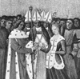Marriage of Charles LeBel and Marie of Luxemburg
-
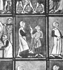Thirteenth-Century Treatise on Surgery, in French
-
 Banquet, with Minstrels playing and room hung with embroidery
Banquet, with Minstrels playing and room hung with embroidery -
 Harl. MS. 4425, Brit. Mus
Harl. MS. 4425, Brit. Mus -
 Christine de Pisan
Christine de Pisan -
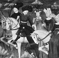Setting out for Poissy
-
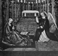Book of Hours of Etienne
-
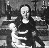Flemish Master
Search OCLC WorldCat for this title.
Search Google Books for this title.
Weld, Horatio Hastings, ed. The Women of the Scriptures. Philadelphia: Lindsay & Blakiston, 1848. Title Variant: The Women of the Old and New Testaments.
Co-authored with Charlotte M. Yonge, Aunt Charlotte's Stories of American History. London, Belfast, and New York: Marcus Ward; Appleton, 1883.
TOC: Eve; Rizpah; Woman's Mission; Life, Character, and Death of Sarah; Rebekah's Farewell to Jacob; Rebekah; Esther; Rachel; Miriam; Queen Vashti's Fall; Hannah; Hannah; The Song of Deborah; Naomi, Oprah, and Ruth; Promise for Zion; The Queen of Sheba; Jewish Domestic Customs.
Search OCLC WorldCat for this title.
Search Google Books for this title.
Wells, Emmeline Blanche Woodward. Charities and Philanthropies: Woman's Work in Utah. Salt Lake City: Cannon, 1893.
NOT = Local compendium. A brief description of several charitable institutions and organizations and women’s philanthropy throughout the state of Utah.
Search OCLC WorldCat for this title.
Search Google Books for this title.
Whale, Winifred Stephens. Women of the French Revolution. London: Chapman & Hall; New York: Dutton, 1922.
TOC: Women Agitators (Mme Legros; Theroigne de Mericourt; La Reine Audu); Salons and Salonnieres (Mme de Condorcet; Mme Helvetius at Auteuil, Mme de Condorcet; Mme de Stael); Clubs and Club Women (Theroigne de Mericourt, Mme de Genlis); Women Writers (Madame Roland); The Story of the Revolution Told by its Women Writers; (Mme de Stael; Mme Roland; Mme de Genlis, Mme Jullien, Louise Fusil, Charlotte Robespierre); Minor Women Writers of the Revolution (Julie Candeille, Olympe de Gouges); Women at Arms (Pauline Leon, Theroigne de Mericourt); Charlotte Corday; Women and Religion (Charlotte Corday,; Mme de Stael; Mme Roland; Mme Jullien); The Rise and Fall of the Women's Party.
Translator and biographer of French subjects; author of French Novelists of Today (1914). Not clear how Mericourt and Genlis are club women. Featured Subjects de Stael and Roland appear in several chapters.
Search OCLC WorldCat for this title.
Search Google Books for this title.
Wharton, Anne Hollingsworth. Colonial Days and Dames, With Illustrations. Philadelphia: Lippincott, 1895; 1908.
By a “colonial dame” whose works include Social Life in the Early Republic (1902) and a biography of Martha Washington (1897).
Chapter titles: Colonial Days; Women in the Early Settlement; A Group of Early Poetesses; Colonial Dames; Old Landmarks; Weddings and Merry-Makings; Legend and Romance.
NOT= miscellaneous history; male-female. A glimpse of the social and domestic life in the colonial days of the North and South.
Search OCLC WorldCat for this title.
Search Google Books for this title.
Wharton, Morton Bryan. Famous Women of the New Testament: A Series of Popular Lectures Delivered in the First Baptist Church, Montgomery, Ala. New York: Treat, 1889; 1890.
TOC: Mariamne, the Wife of Herod the Great; Elizabeth, the Mother of John the Baptist; Mary, the Mother of the Christ Child; Mary, the Mother of the God Man; Anna, the Last Prophetess, and First Missionary; Herodias, the Mother of the Dancing Girl; Joanna, the Wife of Herod's Steward; The Woman of Canaan, the Heroine of Faith; The Woman of Samaria, the Adulteress, But Saved; The Daughter of Jairus, Dead but Raised to Life; Mary of Bethany, or, Women as Christian Workers; Mary Magdalen, the Restored Lunatic; Sapphira, the Lying Woman; Dorcas, the Doer of Good Works; Lydia, the Woman of Business; The Elect Lady, the Model Matron.
-
Slaughter of the Children- Decree of Herod
-
The Angel Announcing Mary of the Mother of Jesus
-
The Holy Family
-
The Syro-Phoenician Woman pleading with Christ
-
Christ conversing with the Samaritan woman
-
 Mary washing Christ's feet
Mary washing Christ's feet
Search OCLC WorldCat for this title.
Search Google Books for this title.
Wharton, Morton Bryan. Famous Women of the Old Testament: A Series of Popular Lectures Delivered in the First Baptist Church Montgomery, Ala. New York: Treat, 1889.
TOC: Eve; Sarah; Rebekah; Rachel; Miriam; Ruth; Deborah; Jephthah’s Daughter; Delilah; The Witch of Endor; Hannah; Abigail; The Queen of Sheba; Jezebel; The Woman of Shunem; Esther.
-
Sarah Borne to the Grave
-
 Rachel at the well where Jacob met her
Rachel at the well where Jacob met her -
Miriam celebrating victory at the Red Sea
-
 Ruth gleaning in the field of Boaz
Ruth gleaning in the field of Boaz -
 Deborah inciting to war
Deborah inciting to war -
 Jephthah's Daughter and Fellow Maidens
Jephthah's Daughter and Fellow Maidens -
 The Witch of Endor bringing the Ghost of Samuel before Saul
The Witch of Endor bringing the Ghost of Samuel before Saul -
 Hannah's son Samuel, and Eli, the High Priest
Hannah's son Samuel, and Eli, the High Priest -
Queen of Sheba Solomon
-
 Jezebel thrown out of the window
Jezebel thrown out of the window -
Esther appealing to King Ahasuerus
Search OCLC WorldCat for this title.
Search Google Books for this title.
Wheeler, Mary Sparkes. First Decade of Woman's Foreign Missionary Society of the Methodist Episcopal Church: With Sketches of Its Missionaries. New York: Phillips & Hunt, 1881; 1883. New York: Cranston & Stowe; Cincinnati, OH: Phillips & Hunt, 1884.
TOC: Introductory Remarks; Organization of the Society; Isabella Thoburn ; Clara A. Swain, M.D. ; First Meeting of the General Executive Committee; Fannie J. Sparkes; Second Annual Meeting of the General Executive Committee; Beulah and Sarah H. Woolston; Mary Q. Porter; Maria Browne; Carrie L. M’Millan; Jennie M. Tinsley; Action of the General Conference; Lucy H. Hoag and Gertrude Howe; Lou E. Blackmar; Lizzie E. Blackmar; Lizzie M. Pultz; Fourth Annual Meeting of the General Executive Committee; Sallie F. Leming; Nancy Monelle, M.D.; Lucinda L. Coombs, M.D.; Fifth Annual Meeting of the General Executive Committee; Sigourney Trask, M.D. ; Anna Julia Lore, M.D.; Letitia Mason, M.D.; Susan M. Warner; Mary Hastings; Jennie M. Chapin and Lou B. Denning ; Dora Schoonmaker; Sixth Annual Meeting; Letitia A. Campbell; Seventh Annual Meeting; Lucilla H. Green, M.D.; Nettie C. Ogden ; Mary F. Cary; Olive Whiting; Eighth Annual Meeting; Leonora S. Howard, M.D.; Ninth Annual Meeting; Mary F. Swaney; Julia A. Sparr, M.D. ; Susan B. Higgins ; Henrietta B. Woolston, M.D.; Salina Alcesta Easton ; Matilda A. Spencer; Mary A. Holbrook; Eugenia Gibson ; Maggie Ellison Layton ; Mary Adelaide Priest; Clara Louisa Mulliner; Clara M. Cushman ; Mary A. Sharp; Tenth Annual Meeting; A Tribute to the Woman’s Foreign Missionary Society ; Constitution of the Woman’s Foreign Missionary Society of the Methodist Episcopal Church; Branch Limits and Head-Quarters; Receipts of Woman’s Foreign Missionary Society; Payments to Woman’s Foreign Missionary Society; Form of Bequest and Devise to Woman’s Foreign Missionary Society.
See Franc Baker and Gracey. Short biographies (5-10 pages) of approximately fifty women, who contributed to the start and organization of the Woman’s Foreign Missionary Society. Includes a frontispiece portrait of Isabella Thoburn, the first representative of the society. Some fifteen of the 59 chapters concern meetings or business of the society.
Search OCLC WorldCat for this title.
Search Google Books for this title.
White, Mary Culler. Stylus Photographus: Pictures of the Bible Women and Scholarship Girls of the China Mission. Nashville: M.E. Church South, 1922.
NOT:=religious typology.
Search OCLC WorldCat for this title.
Search Google Books for this title.
Whiting, Lilian. The Golden Road. Boston: Little, Brown, 1918.
See How To Make It as a Woman, 7-9.
NOT:=auto/biography, miscellany. Travels, memoirs and other essays, by a prolific writer of inspirational works, travel, and biographies of the Brownings, Kate Field, and others.
Search OCLC WorldCat for this title.
Search Google Books for this title.
Whiting, Lilian. Women Who Have Ennobled Life. Philadelphia: Sunday-School Union, 1915.
See How To Make It as a Woman, 7-9.
TOC: Elizabeth Barrett Browning; Mary Ashton Livermore; Louisa May Alcott; Margaret Ossoli Fuller; Mary Lyon; Harriet Beecher Stowe; Frances E. Willard; Harriet Goodhue Hosmer; Julia Ward Howe. .
-
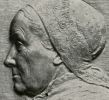Julia Ward Howe
-
 Elizabeth Barrett Browning
Elizabeth Barrett Browning -
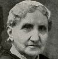Mrs. Mary A. Livermore
-
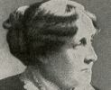Louisa May Alcott
-
 Margaret Fuller d'Ossoli
Margaret Fuller d'Ossoli -
 Mary Lyon
Mary Lyon -
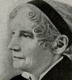Harriet Beecher Stowe
-
 Frances Elizabeth Willard
Frances Elizabeth Willard -
 Lady Henry Somerset
Lady Henry Somerset -
 Harriet Hosmer
Harriet Hosmer -
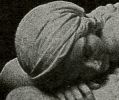Beatrice Cenci
-
 Julia Ward Howe
Julia Ward Howe -
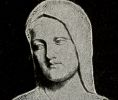Florence Nightingale
Search OCLC WorldCat for this title.
Search Google Books for this title.
Whitmore, Clara H. Woman's Work in English Fiction from the Restoration to the Mid-Victorian Period. New York: Putnam's, 1910.
TOC: Margaret Cavendish; Aphra Behn; Mary Manley; Sarah Fielding; Eliza Haywood; Charlotte Lennox; Frances Sheridan; Frances Burney; Hannah More; Charlotte Smith; Elizabeth Inchbald; Clara Reeve; Ann Radcliffe; Sophia Lee; Harriet Lee; Maria Edgeworth; Lady Morgan; Elizabeth Hamilton; Anna Porter; Hane Porter; Amelia Opie; Mary Brunton; Jane Austen; Susan Edmonstone Ferrier; Mary Russell Mitford; Anna Maria Hall; Lady Caroline Lamb; Mary Shelley; Catherine Grace Frances Gore; Anna Eliza Bray; Julia Pardoe; Frances Trollope; Harriet Martineau; Emily Bronte; Anne Bronte; Charlotte Bronte; Elizabeth Cleghorn Gaskell.
Search OCLC WorldCat for this title.
Search Google Books for this title.
Who's Who of Indian Women, International. 1st ed. Madras: National Biographical Centre, [1900?]. 1977.
NOT=reference. Pending information on the contents of this collection. See National Council of Women in India, Women in India .
Search OCLC WorldCat for this title.
Search Google Books for this title.
Wickham, Gertrude Van Rensselaer. Memorial to the Pioneer Women of the Western Reserve. 5 vols. in 3. Cleveland: Savage, 1896-97. [Monthly parts 1896-1897]. 2 vols. in 1, Cleveland: Women's Dept./Cleveland Centennial Commission, 1896; [1924?]. LaCrosse, Wisc.: Brookhaven, 2000.
Search OCLC WorldCat for this title.
Search Google Books for this title.
Wigmore, Sheila. Australian Pioneer Women. [Sydney: Australian Broadcasting Commission], 1933.
Search OCLC WorldCat for this title.
Search Google Books for this title.
Wild, Laura Hulda. Bible Character Studies: Women of the Bible. Chicago: International Committee of YWCA, 1898.
NOT = Book of prayers? Not concerned with the lives of the women of the bible, but rather provides prayers to cultivate certain womanly characteristics as depicted through these women.
TOC: Study I. Deborah. The Woman of Leadership; Study II. Ruth. The Example of Friendship Between Women; Study III. Esther. The Woman of Position. A Parallel to the Modern Woman in Society; Study IV. The Ideal Woman of the Old Testament; Study V. Mary. The Mother of Our Lord; Study VI. The Ideal Woman in Christ’s Mind, So Far as We Can Judge by His Commendations and Rebuke of Women in the Gospels; Study VII. The Part of Women in the Establishment and the Church.
Search OCLC WorldCat for this title.
Search Google Books for this title.
Willard, Frances Elizabeth, and Mary A. Livermore, eds. A Woman of the Century: Fourteen Hundred-Seventy Biographical Sketches Accompanied by Portraits of Leading American Women in All Walks of Life. Buffalo, NY, Chicago, and New York: Moulton, 1893. Detroit: Gale Research, 1968. New York: Gordon Press, 1975. Tokyo: Athena Press, 2008. Rev. ed. As: American Women: Fifteen Hundred Biographies With Over 1,400 Portraits: A Comprehensive Encyclopedia of the Lives and Achievements of American Women During the Nineteenth Century. 2 vols., New York, Chicago, and Springfield, OH: Mast, Crowell & Kirkpatrick, 1897.
NOT:=reference, history. International Dictionary incorrectly states 470, not 1470. Another encyclopedic compilation associated with the occasion of the World's Columbian Exposition. Willard and Livermore were active participants in mutual multibiography at this period. Willard is author of How to Win: A Book for Girls (New York: Funk & Wagnalls; Chicago: Women's Temperance, 1886).
Search OCLC WorldCat for this title.
Search Google Books for this title.
Williams, Edith A. Heroines of India, for Senior Girls. London: UCME, 1919; 1920. Livingstone, 1922.
See Phyllis Riches, Analytic Bibliography of Universal Collected Biography [i.e. before 1933]. Other U.C.M.E. publications circa 1914-1925. The back cover of the second edition of this 64-pp. paperback book (1920) lists The "Heroines" Series: Heroines of Healing by C. E. Padwick [a617]; Heroines of Unknown Ways by E. E. Whimster [a268]; Heroines of India by E. A. Williams, all at 9d. net, and Working Girls of China by E. E. Whimster, at 1s. net, available "from all Missionary Societies." Frontispiece portrait of Chundra Lela, from "An Indian Princess," by Ada Lee, used with permission. Three additional illustrations: photographs of "The Snows of the Himalayas," a group of small schoolgirls "Sitting for a Photograph," and "A Letter from Flower- Heart," one of those girls, in facsimile and translated into English. Edith A. Williams is "Late Principal of Girls' Training Class, Bankipur. Epigraph on title page from Robert Browning: "Oh heart I made, a heart beats here!....And thou must love me who have died for thee!" Foreword to Leaders (one page) says "the book aims at awakening in our girls a vivid consciousness of the need of India's women and children, and an active desire henceforth to do something to meet that need" (3). The narratives can be in present tense, second person, as in a tour of the school with introductions to the girls there, including a baby blinded because she was a girl: "It is good to feel our baby girls at home are generally wanted, isn't it?" (48). Other chapters are single biographies, as titles indicate. "A New Missionary" is an anonymous apparently autobiographical but third-person narrative of arriving at the mission and meeting an orphan girl, Flower-Heart.
TOC: The Village of the Buffalo: Gungai, the Outcaste; Seeking: Chundra Lela (1); Finding: Chundra Lela (2); Opening the Door: Krupabai Satthianadhan; Eastward Ho!: A New Missionary; The Need of the East: Four Indian Girls; Epilogue; Notes and Suggestions for the Leader.
Search OCLC WorldCat for this title.
Search Google Books for this title.
Williams, Hugh Noel. Five Fair Sisters: An Italian Episode at the Court of Louis XIV. London: Hutchinson, 1906; 1907. New York: G.P. Putnam's Sons, 1906.
TOC: Laure Mancini; Olympe Mancini, Countess de Soissons; Marie Mancini Colonna, Princess di Palliano; Hortense Mancini; Marie Anne Mancini, Duchess de Bouillon; Anne of Austria, Queen of France; Laura Martinozzi, Duchess of Modena; Anne Marie Martinozzi, Princess di Conti.
NOT= male-female, history. Yet much is biographical, and includes details from Marie's memoirs and Anne of Austria's correspondence. Title page identifies Williams as author of biographies of Mesdames Recamier, Pompadour, de Montespan, du Barry, as well as the "French Stage" volumes listed in CBW. An extensive index follows final page of last chapter (414), and there is a long list of illustrations but no table of contents per se. Chapters have initial summaries. A group biographical history about Anne of Austria (Queen Mother) and her favorite, Cardinal Mazarin, who imported his nieces and some nephewes from Rome as pawns in alliances with powerful French families.
-
 Anne Marie Martinozzi, Princesse de Conti
Anne Marie Martinozzi, Princesse de Conti -
 Laure Mancini Duchesse de Mercoeur
Laure Mancini Duchesse de Mercoeur -
 Marie Mancini
Marie Mancini -
Anne of Austria, Queen of France
-
 Maria Theresa of Austria, Queen of France
Maria Theresa of Austria, Queen of France -
Marianne Mancini, Duchesse de Bouillon
-
 Marie Mancini Colonna, Principessa di Palliano
Marie Mancini Colonna, Principessa di Palliano -
 Marie Louise D'Orleans, Queen of Spain
Marie Louise D'Orleans, Queen of Spain -
 Olympe Mancini, Comtesse de Soissons
Olympe Mancini, Comtesse de Soissons
Search OCLC WorldCat for this title.
Search Google Books for this title.
Williams, Hugh Noel. Later Queens of the French Stage. London: Harper; New York: Scribner, 1906.
TOC: Sophie Arnould; Mademoiselle Guimard; Mademoiselle Raucourt; Madame Dugazon; Mademoiselle Contat; Madame Saint-Huberty.
Search OCLC WorldCat for this title.
Search Google Books for this title.
Williams, Hugh Noel. Queens of the French Stage. London: Harper; New York: Scribner, 1905.
TOC: Adrienne Lecouvreur; Armande Bejart; Jean Racine; Maurice de Saxe; Mademoiselle Prevost; Mademoiselle de Camargo; Justine Favart; Mademoiselle Clairon; Elizabeth Berkeley, Countess of Craven.
Search OCLC WorldCat for this title.
Search Google Books for this title.
Williams, Hugh Noel. Rival Sultanas. London: Hutchinson; New York: Dodd, 1915.
TOC: Nell Gwyn; Louise de Keroualle; Hortense Mancini, duchesse de Mazarin.
Chapter titles: The Early Loves of Charles II; The Beginnings of Nell Gwyn; Nell Gwyn and Lord Buckhurst; "The King Sends for Nelly"; The Merry Monarch; Nell Leaves the Stage; The Treaty of Dover; The Accession of Louise de Kéroualle; Intrigues, Political and Otherwise; Louise de Kéroualle Becomes Duchess of Portsmouth; The Duchess of Portsmouth and Nell Gwyn; Madame de Mazarin Enters the Lists; Triumph of Madame de Mazarin; Charles, Louis and the Parliament; The Popish Plot; The Exclusion Bill; The Triumph of the Court; Le Roi S'Amuse; The Duchess of Portsmouth Visits France; The Episode of the Grand Prior; Nell Gwyn's Letters; The Death of Charles II; The Last Days of Nell Gwyn; Exeunt Portsmouth and Mazarin.
Search OCLC WorldCat for this title.
Search Google Books for this title.
Williams, Hugh Noel. Unruly Daughters: A Romance of the House of Orleans. London: Hutchinson; New York: Putnam, 1913.
NOT = male/female biography; miscellaneous history. A general history of the House of Orleans with an emphasis on male biography.
Search OCLC WorldCat for this title.
Search Google Books for this title.
Williams, Hugh Noel. The Women Bonapartes: The Mother and Three Sisters of Napoleon I. London: Methuen, 1908. New York: Scribner's Sons, 1909.
Bodleian
TOC: Letizia Bonaparte; Elisa Bonaparte; Pauline Bonaparte; Caroline Bonaparte.
An account of the lives of Letizia Bonaparte and her three daughters, in relation to the life of Napoleon Bonaparte (with ample history of the period). Includes frontispiece portrait of Pauline Bonaparte.
-
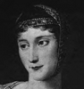Pauline Bonaparte
-
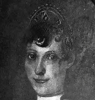Maria Letizia Bonaparte
-
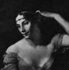Josephine at Malmaison
-
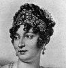Caroline Bonaparte
-
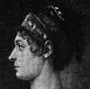Elisa Bonaparte
Search OCLC WorldCat for this title.
Search Google Books for this title.
Williams, Isaac. Female Characters of Holy Scripture: In a Series of Sermons. London: Rivingtons, 1859; 1862; 1869; 1870. New ed., 1873; 1878; 1884; Longmans, Green, 1890; 1909.
Contributor to Tracts for the Times ; Rivington's and Longmans also pub. Characters of the Old Testament ; these originated in sermons.
Search OCLC WorldCat for this title.
Search Google Books for this title.
Williams, Jane. The Literary Women of England. Including a Biographical Epitome of All the Most Eminent to the Year 1700; and Sketches of the Poetesses to the Year 1850; with Extracts from Their Works, and Critical Remarks. London: Saunders & Otley, 1861.
British Library. NOT = reference, anthology, as title indicates. “It is evident that the welfare of society must be promoted by an extended knowledge of the lives, principles, and sentiments of the most eminent and excellent English authoresses” (from Introduction).
Search OCLC WorldCat for this title.
Search Google Books for this title.
Williams, Mary A. Barnes. Fifty Pioneer Mothers of McLean County, North Dakota. Washburn, ND: Washburn Leader, 1932.
NOT=local compendium.
Search OCLC WorldCat for this title.
Search Google Books for this title.
Williams, S. W. Queenly Women, Crowned and Uncrowned. Toledo, OH: Hood, [1880s?]. Cincinnati: Cranston and Stowe, [1885].
TOC: Wife of the Father of His Country (Martha Washington); The Wife of Napoleon (Josephine); (The Wife of Luther (Catherine Von Bora); Consecrated Talents (Hannah More); The Missionary Heroine (Ann Hasseltine Judson); The Model Queen (Isabella of Spain); The Enigma of History (Mary, Queen of Scots); The Female Howard (Elizabeth Fry); An Angel of Mercy (Florence Nightingale); Africa's Benefactress (Mrs. Ann Wilkins); The Mother of Reformers (Susannah Wesley); The Greek Matron (Penelope); The Roman Matron (Cornelia); The India Maiden (Pocahontas); The Poetess of the Affections (Frances Sargent Osgood); The Songstress of Liberty (Elizabeth Barrett Browning); The Martyr Queen (Marie Antoinette); The Female Girondist (Madame Roland); Light Sown in Darkness (Charlotte Bronte); The Missionary Poet (Emily C. Judson); Walking with God (Mrs. Mary Fletcher); Exalted Piety and Noble Rank (Lady Huntingdon); Piety and Royalty (Helena, Duchess of Orleans); The Martial Heroine (The Maid of Saragossa); Foundress of a School for the Prophets (Mrs. Eliza Garrett); The Champion of Freedom (Harriet Beecher Stowe); The Female Sculptor (Harriet E. Hosmer); The Female Painter (Rosa Bonheur); A Political Authoress (Madame de Staël; The Patroness of Letters (Queen Elizabeth); A Victim of Crime (Beatrice Cenci); The Wife of a Patriot (Abigail Adams).
Search OCLC WorldCat for this title.
Search Google Books for this title.
Williamson, Emma Sara. The Book of Beauty (Era King Edward VII): A Collection of Beautiful Portraits with Literary, Artistic, and Musical Contributions by Men and Women of the Day. London: Hutchinson, 1902.
NOT:=art history, miscellany, history.
Search OCLC WorldCat for this title.
Search Google Books for this title.
Williamson, Emma Sara. The Book of Beauty (Late Victorian Era): A Collection of Beautiful Portraits with Literary, Artistic, and Musical Contributions by Men and Women of the Day. Deluxe ed. London: Hutchinson, 1896; 1897.
NOT:=art history, miscellany, history.
Search OCLC WorldCat for this title.
Search Google Books for this title.
Williamson, William Henry. Annals of Crime: Some Extraordinary Women. London: Routledge, 1930.
TOC: Jeanne de la Cour; Mrs. Maybrick; Madame Lafarge; Christiana Edmunds; Marie de Morell; Helene Jagado; Madeleine Smith; Marie Michel; Constance Kent; Célestine Doudet; Madame Joniaux.
Search OCLC WorldCat for this title.
Search Google Books for this title.
Willing, Jennie Fowler. God's Great Women. Louisville, KY: Pentecostal, [1910s?].
Author of The Potential Woman: A Book for Young Ladies (Boston: McDonald & Gill, 1886). Mount Vernon Nazarene University (Ohio) copy a 158-pp. brown cloth-bound book signed in ink on flyleaf "Irene Angerer./ 1916." thus suggesting publication date range. Paper browned and fragile. Chapter XVI, "God's Model Woman," refers to the description in Proverbs 31 of the woman whos price is above rubies. This description "is in perfect accord with the most advanced thought of this latest, best century. Quoting Sojourner Truth to the effect that you should just claim your rights, the text advises studying the Bible and living by it to gain rights (96). Women have in general been "bought and sold, and at a very low rate of exchange. Even in our own country...the head of the Mormon church" supposedly said wives were expendable (97). But "a good wife is God's best gift....She is industrious....She will not be kept in idleness" (97). This copy appears to have been checked out quite often since 1972 and has some pink highlighting of passages.
TOC: Eve, the mother; Rebkah, the woman of affairs; Rachel, the favorite; Leah, the unloved; Jochebed, the courageous; Miriam, the leader; Rahab, the converted heathen; Deborah, the judge; Jael, the deliverer; Ruth, the foreigner; Naomi, the gracious; Hannah, the rewarded mother; Abigail, the wise; The Widow of Zarephath; The Hospitable Shunamite; God's model woman; Esther, the beautiful diplomat; Elizabeth, Mother of the Herald; Mary, the mother our Lord; Mary, the spiritual minded; Martha, the housekeeper; The Woman of Samaria; Mary, the healed demoniac; Dorcas, the friend of the poor; Priscilla, the happy Christmas worker; Salome, the ambitious.
Search OCLC WorldCat for this title.
Search Google Books for this title.
Willing, Thomson. Dames of High Degree: Being Portraits After English Masters, with Decorations and Biographical Notes. Boston and London: Knight, 1896.
TOC: Her Grace of Marlborough; Countess of Suffolk; Lady Sarah Lennox; Her Grace of Gloucester—Countess Waldegrave; Her Grace of Cumberland; “True Blue and Mrs. Crewe”; Her Grace of Gordon; The Margravine of Anspach—Lady Craven; “Sweet Lass of Richmond Hill”—Mrs. Fitzherbert; The Countess of Ashburnham.
Indebted to Hoppner/Wilkin, related to Thormanby/Willmott Dixon. Willing an authority on visual arts.
-
Duchess of Marlborough
-
Countess of Suffolk
-
Lady Sarah Lennox
-
Lady Waldegrave
-
Duchess of Cumberland
-
Mrs. Crewe and Mrs. Bouverie
-
Duchess of Gordon
-
Countess of Craven
-
Viscount St. Asaph
Search OCLC WorldCat for this title.
Search Google Books for this title.
Willing, Thomson. Some Old Time Beauties after Portraits by the English Masters, With Embellishment and Comment. Boston: Joseph Knight, 1895.
TOC: Georgiana, Duchess of Devonshire; Mary, Honorable Mrs. Graham; Emma, Lady Hamilton; Mrs. Sheridan; Marguerite, Countess Blessington; Mary Isabella, Duchess of Rutland; Lavinia, Countess Spencer; Elizabeth, Duchess of Hamilton; Maria, Countess of Coventry; Elizabeth, Countess Grosvenor.
Search OCLC WorldCat for this title.
Search Google Books for this title.
Willson, Arabella M. Stuart. The Lives of Mrs. Ann H. Judson and Mrs. Sarah B. Judson: With a Biographical Sketch of Mrs. Emily C. Judson, Missionaries to Burma. Auburn, NY,: Derby & Miller, 1851; 1852. Auburn, NY, and Buffalo, NY: Miller Orton & Mulligan, 1854. New York: Saxton, 1858; 1860. Note differing titles from same or different publishers. Rpt. as Lives of the Three Mrs. Judsons: Mrs. Ann H. Judson, Mrs. Sarah B. Judson, Mrs. Emily C. Judson: Missionaries to Burmah. Boston: Lee & Shephard, 1855; 1869; 1875. New York: Saxton, 1855; 1860.
TOC: Mrs. Ann H. Judson; Mrs. Sarah B. Judson; Mrs. Emily C. Judson.
Search OCLC WorldCat for this title.
Search Google Books for this title.
Wilmot-Buxton, Ethel Mary. A Book of Noble Women. Boston: Small, Maynard; London: Methuen, 1907.
TOC: Jeanne d'Arc, the Maid of France; Jeanne d'Albret, Queen of Navarre; Mary Stuart, Queen of Scots; Mère Angélique; Marie Thérèse, Queen of Hungary; Marie Antoinette, Queen of France; Madame Roland; Hannah More; Fanny Burney; Elizabeth Fry; Jane Austen; Dorothy Wordsworth; Mary Somerville; Charlotte and Emily Brontë; Sister Dora; Elizabeth Barrett Browning.
Author of Jeanne d'Arc (New York: Stokes, [1914]), and numerous histories of early Britain, religious figures, etc.
-
 Charlotte Bronte
Charlotte Bronte -
 Dorothy Wordsworth
Dorothy Wordsworth -
 Elizabeth Barrett Browning
Elizabeth Barrett Browning -
 Elizabeth Fry
Elizabeth Fry -
Fanny Burney (Madame D'Arblay)
-
 Hannah More
Hannah More -
Jane Austen
-
 Jeanne D'Albret in 1570
Jeanne D'Albret in 1570 -
Madame Roland
-
 Marie Antoinette Hearing Her Accusation Read
Marie Antoinette Hearing Her Accusation Read -
Marie Therese, Queen of Hungary and Empress of Germany
-
 Mary Somerville
Mary Somerville -
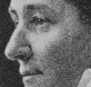Sister Dora
Search OCLC WorldCat for this title.
Search Google Books for this title.
Wilson, Helen, [Mrs.]. Brave Days: Pioneer Women of NZ. Dunedin and Wellington, New Zealand: Reed, 1939. Illustrated.
NOT:=miscellany, history. A collective history, descriptive of conditions; organized by region rather than bio. subject. Yet part of 1930s efforts in Aus. and N.Z. to honor pioneer women.
Search OCLC WorldCat for this title.
Search Google Books for this title.
Wilson, R. McNair. Women of the French Revolution. London: Hutchinson, 1936. Port Washington, NY: Kennikat 1970.
Possible relation to Michelet or Whale. Biographer of Josephine, de Stael, Napoleon's mother, and others; handbooks on money and medicine; murder mysteries.
Search OCLC WorldCat for this title.
Search Google Books for this title.
Wilson, Violet Alice. Queen Elizabeth's Maids of Honour and Ladies of the Privy Chamber. With Twelve Portraits. London: Lane, 1922.
British Library.
TOC: Mary Fitton; Lady Catherine Grey; Queen Elizabeth; Mary Sydney, Countess of Pembroke; Elizabeth Howard, Lady Southwell; Kate Carey, Countess of Nottingham; Elizabeth Throckmorton, Lady Raleigh; Mary Radclyffe, Elizabeth Bridges; Elizabeth Vernon, Countess of Southampton; Ann Russell, Lady Herbert.
Search OCLC WorldCat for this title.
Search Google Books for this title.
Wilson, Violet Alice. Society Women of Shakespeare's Time. London: Lane; New York: Dutton, 1924; 1925. Port Washington, NY: Kennikat, 1970.
TOC: Lady Russell; Elizabeth Cooke; Lady Sidney; Lady Rich; Lady Southampton; Lady Warwick; Countess of Cumberland; Countess of Shrewsbury; Lady Raleigh; Lady Somerset; Lady Hoby.
A general history of the society of women in Shakespeare’s time, mixed with short biographical sketches. The aim of the book is to illustrate some of society’s women who helped to shape Shakespeare’s characters.
Search OCLC WorldCat for this title.
Search Google Books for this title.
Wilson, William. Heroines of the Household. Illustrated by M. Ellen Edwards. London: Cassell, Petter, & Galpin, 1864. New York and London: Virtue, 1869. London: Strahan, 1870. London and New York: Routledge, 1880.
TOC: Monica (Augustine); Olympia Morata; Lady Brilliana Harley; Grisell Hume Baillie; Mme de Chantal; Mlle Legras; Mme de Miramion; Caroline Claudius Perthes, Wife of Frederick Perthes; Mary Anne Galton (Mrs. Schimmelpenninck); Miss Marsh.
Chapter titles: Monica, The Mother of Augustine; Olympia Morata, A Star of the Reformation; Lady Brilliana Harley, of Brampton Beyan; Grisell Hume (Lady Baillie of Jerviswoode); Madame de Chantal, Mademoiselle Legras, Madame de Miramion, Lady-Founders of Sisterhoods, and Servants of the Poor in France; Caroline Claudius, Wife of Frederick Perthes; Mary Anne Galton (Mrs. Schimmelpennick); The Kaiserwerth Deaconesses; Miss Marsh's Labours Among the Navies.
Wilson was Minister of the Free Church at Musselburgh. “By the author of 'The Heavenward Path.'”
-
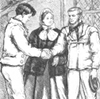The Christian Triumph
-
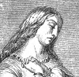Monica, the Mother of Augustine
-
 Augustine and Monica
Augustine and Monica -
 Olympia Morata
Olympia Morata -
 Olympia Morata at Ferrara
Olympia Morata at Ferrara -
 Lady Harley's Defence of Brampton Castle
Lady Harley's Defence of Brampton Castle -
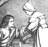Grisell Hume,The Brave Daughter
-
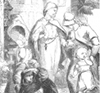The Sisterhood
-
 An Incident in the Life of Madame de Chantal
An Incident in the Life of Madame de Chantal -
 The Strength of the Tender Wife
The Strength of the Tender Wife -
 Planting for the Future
Planting for the Future
Search OCLC WorldCat for this title.
Search Google Books for this title.
Winthrop Normal College, Columbia, SC. Catalogue . . . 1892-93, With the Exercises of Peabody Memorial Day, May 12, 1893, Including Sketches of the “Historic Women of South Carolina.” Columbia, SC: Calvo, 1893.
NOT:=catalogue, miscellany, history.
Search OCLC WorldCat for this title.
Search Google Books for this title.
Wise, Daniel. Some Remarkable Women: A Book for Young Ladies. Cincinnati, OH: Cranston & Stowe; Jennings & Pye; New York: Phillips & Hunt; Eaton & Mains, 1887.
TOC: Bronte' sisters; Hannah Adams; Elizabeth Prentiss; Sister Dora; Mary Lamb; Frances Ridley Havergal; Felicia Hemans; The Two Grimke' sisters; Caroline Herschel.
Author of juvenile pious fiction and advice books, e.g. The Young Lady's Counsellor (1851); Heroic Methodists of the Olden Time (1882), and biographies of John Wesley, Milton, Shakespeare, Carlyle, etc.
Search OCLC WorldCat for this title.
Search Google Books for this title.
Wister, Mrs. O. J. [Sarah Butler Wister], and Agnes Irwin, eds. Worthy Women of Our First Century. Philadelphia: Lippincott, 1877.
TOC: S.N. Randolph: Mrs. T.M. Randolph; S.F. Cooper: Mrs. Philip Schuyler; E. Hoar: Mrs. Samuel Ripley; F.W. Fiske: Women of New Hampshire; A Lady of South Carolina: Mrs. Rebecca Motte; O.J. Wister: Mrs. Deborah Logan.
Search OCLC WorldCat for this title.
Search Google Books for this title.
Witt, Henriette de. Dames of High Estate. Translated and edited by Charlotte M. Yonge. London and New York: Warne, 1872.
NOT? Prob. historical fiction by popular French historian, biographer, author of juvenile fiction.
TOC: Countess and Queen; Something Great; Climbing High; Behind the Hedges.
Search OCLC WorldCat for this title.
Search Google Books for this title.
Wittenmyer, Annie. The Women of the Reformation. New York: Phillips & Hunt; Cincinnati, OH: Cranston & Stowe, 1885.
Author of memoirs and handbook of women's Civil War work and of Women's Work for Jesus (1871; Methodist churchwomen); co-author with Frances Willard of History of the Woman's Temperance Crusade (1878). An account of the important work performed by women of the Reformation.
TOC: Joan, Mother of Richard II. of England; Anne of Bohemia, Queen of Richard II; The Reformation in Bohemia; Marguerite of Valois, Sister of Francis I. of France; Renee, Daughter of Louis XII. of France, Duchess of Ferrara; Jeanne d'Albret, the Illustrious Queen of Navarre; Charlotte de Bourbon, Princess of Orange; Louise de Coligny, Princess of Orange; The Reformation in England; Anne Boleyn, Second Queen of Henry VIII; Catharine Parr, Sixth Queen of Henry VIII; Lady Jane Grey; Catherine Willoughby, Duchess of Suffolk; Queen Elizabeth of England; The Reformation in Germany - Catherine Von Bora; Princess Elizabeth, Electress of Brandenburg; Elizabeth, Duchess of Brunswick-Calenberg; Elizabeth Knox, Wife of John Welsh; Lady Anne Cunningham, Marchioness of Hamilton; Lady Margaret Douglas, Marchioness of Argyll; Lady Anne, Duchess of Hamilton; Barbara Cunningham, Lady Caldwell; Lady Anne Lindsay, Countess of Rothes; Lady Anne Mackenzie, Countess of Balcarres, Afterward Countess of Argyll, and Her Daughters Lady Sophia and Lady Henrietta Campbell; Lady Grisell Hume - Lady Baillie of Jerviswood.
Search OCLC WorldCat for this title.
Search Google Books for this title.
Wives and Mothers of the Bible. Short Readings for Home and Mother's Meetings, by the Author of The Choristers of the Bible. London: SPCK, 1883.
Pending information on the contents of this collection. See Phyllis Riches, Analytic Bibliography of Universal Collected Biography.
Search OCLC WorldCat for this title.
Search Google Books for this title.
Woman in All Ages and in All Countries. 10 vols. Philadelphia: Rittenhouse, 1907-8.
NOT = Miscellaneous history. The unnumbered volumes, catalogued under Mitchell Carroll [1870-1925] though no general editor is named, weave lives of notable women into narrative histories and comparative sociological interpretation. Greek Women is first, and Women of America is last. John A. Burgan is named as the “publisher's editor” (Schoenfeld xi). See my chapter five. In Volume I: Greek Women, the table of contents, as follows, gives a picture of the approach: topical history of Greek womanhood from the Heroic Age to the Roman times, with some individual biographies (Sappho, Aspasia, and Aphrodite): I. Greek Women; II. Women of the Heroic Age; III. Women of the Iliad; IV. Women of the Odyssey; V. The Lyric Age; VI. Sappho VII. The Spartan Woman; VIII. The Athenian Woman; IX. Aspasia; X. Aphrodite Pandemos; XI. The Woman Question in Ancient Athens; XII. The Greek Woman in Religion; XIII. Greek Women and the Higher Education; XIV. The Macedonian Woman; XV. The Alexandrian Woman.
Search OCLC WorldCat for this title.
Search Google Books for this title.
Women of Attainment: Brief Biographies of Prominent Citizens of Rochester. Bk I. Rochester, NY: Rochester Museum, [1940?].
NOT=A local archive, table of contents pending.
Search OCLC WorldCat for this title.
Search Google Books for this title.
Women of the Bible, By Eminent Divines. Illustrated. New York and London: Harper, 1900.
TOC: Eve; Sarah; Rebekah; Miriam; Deborah; Ruth, the Gleaner; Hannah; Jezebel; Esther; Mary Magdalen; Mary and Martha; The Blessed Virgin Mary.
Search OCLC WorldCat for this title.
Search Google Books for this title.
Women of Canada. Montreal: Women of Canada, 1930.
TOC: Past and Present of Canadian Women; Legal and Political Status; Professions and Careers; Trades and Industries; English Education; French Education; Libraries; Literature; Art, Handicrafts, Music and the Drama; Nationally Organized Societies; Church Work; Charities and Reform; Social Life; Immigration; Indian Women.
Search OCLC WorldCat for this title.
Search Google Books for this title.
Women of History, by Eminent Writers. London and Edinburgh: Nimmo, 1866; 1870; 1873; 1885. As: Women of History. Edinburgh: Nimmo, 1873; Nimmo, Hay & Mitchell, 1885.
British Library. Bodleian Oldfield. Listed in Nimmo's 1875 catalogue, as companion to Men of History by Eminent Writers .
NOT = Reference work. A reference work for important women throughout history. Approximately one hundred women are listed in chronological order, beginning with Lucretia and ending with Charlotte Bronte. A brief biography is dedicated to all of these women (1-3 pages). A companion to the volume, Men of History. “To exhibit views of the world’s great men and women, as set forth in the best words of the best authors- to convey, as it were, at once impressions of History and Literature, and lessons in Biography and Style” (from Preface).
Search OCLC WorldCat for this title.
Search Google Books for this title.
Women of Leadville. [Leadville], CO: Nowland, 1897.
NOT=A local archive, table of contents pending.
Search OCLC WorldCat for this title.
Search Google Books for this title.
Women of the Old and New Testaments: A Series of Portraits. Philadelphia: Lindsay & Blakiston, 1848. 2d ed. New York and Philadelphia: Appleton, 1851.
This is probably the collection by William Buell Sprague, later produced by Jonathan Mayhew Wainwright as The Women of the Bible (listed under Sprague above). Each portrait of a prominent woman of the Old or New Testament is written by a different author and includes an illustration. These portraits “aim to bring out those great lessons of truth and wisdom which, in some form or other, like embodied in all of these characters, and which are adapted to form the mind to virtue, usefulness and immortal felicity” (from Preface).
TOC: The Virgin Mary; Sarah; Elizabeth; Miriam; Anna the Prophetess; Rahab; Herodias; The Levite's Wife; Woman of the Samaria; Zipporah; The Canaanitish Woman; The Witch of Endor; Daughter of Jairus; Widow of Nain; Michel; Martha; Mary Magdalene; Bathsheba.
Search OCLC WorldCat for this title.
Search Google Books for this title.
Women Prominent in the Literary and Cultural Life of North Carolina. Charlotte, NC: n.p., 1914.
NOT=A local archive, table of contents pending.
Search OCLC WorldCat for this title.
Search Google Books for this title.
Women's Centenary Council, Victoria, Historical Committee. Records of Pioneer Women of Victoria, 1835-60. [Melbourne]: n.p., 1937.
NOT=A local archive, table of contents pending.
Search OCLC WorldCat for this title.
Search Google Books for this title.
Women Who Conquer. Stirling: Drummond's Tract; London: Partridge, [1919].
TOC: Deborah; Jochabed; Ruth; Abigail; The Model Wife; Esther; The Syrophenician Woman.
Bodleian 12o pink; 32pp.
Search OCLC WorldCat for this title.
Search Google Books for this title.
Women's Christian Temperance Union. Thumb Nail Sketches of White Ribbon Women: Official. Chicago: Women's Temperance Publishing, 1895.
NOT = Reference work. Short thumbnail sketches (1-2 paragraphs) of approximately two hundred White Ribbon Women. Published by the Women’s Christian Temperance Union.
Search OCLC WorldCat for this title.
Search Google Books for this title.
Woodhouse, Airini Elizabeth, ed. Tales of Pioneer Women; Collected by the Women's Institutes of New Zealand. Christchurch, London, and Auckland: Witcombe & Tombs, 1940. Hamilton, NZ: Silver Fern, 1940; 1988.
NOT=A local archive, table of contents pending.
Search OCLC WorldCat for this title.
Search Google Books for this title.
Woods, Mrs. Matthew. Some Women of the Pre-Raphaelite Movement. [Philadelphia: Browning Press, 1914].
Paper read at the Philadelphia Society of Arts and Letters, April 8, 1914.
Search OCLC WorldCat for this title.
Search Google Books for this title.
Woodward, Ida. Five English Consorts of Foreign Princes. London: Methuen, 1911; 1912.
TOC: Margaret Tudor, queen of Scotland, eldest daughter of Henry VII, 1489-1541; Mary Tudor, queen of France and duchess of Suffolk, third daughter of Henry VII, 1496-1533; Elizabeth, queen of Bohemia, the Queen of Hearts, eldest daughter of James I, 1596-1662; Mary Stuart, princess of Orange, eldest daughter of Charles I, 1641-1660; Henrietta Anne of England, duchess of Orleans, and her times, 1644-1670.
Search OCLC WorldCat for this title.
Search Google Books for this title.
Woolfall, Lila Graham Alliger. The Pocket History of the Ladies of the White House: and Information About the Executive Mansion, Its Apartments, Etiquette and Social Code. New York: Woolfall, 1898. Published under pseudonym Olga Stanley. Redesigned as: Presiding Ladies of the White House: Containing Biographical Appreciations Together with a Short History of the Executive Mansion and a Treatise on Its Etiquette and Customs. Introduction by Margaret E. Sangster. Washington, DC: Bureau of National Literature and Art, 1903.
Search OCLC WorldCat for this title.
Search Google Books for this title.
Woosnam, Etty. The Women of the Bible: New Testament. London: Partridge, 1880; 1889. 2 vols. in 1 London: Partridge, 1881,1884
TOC: The Women of Samara; Mary of Bethany; Marth; Sapphira; Dorcas; Lydia; The Servants of the Early Church; Lois and Eunice; The Queen of Shebaz; The Little Captive Maid; Athaliah.
Search OCLC WorldCat for this title.
Search Google Books for this title.
Woosnam, Etty. The Women of the Bible: Old Testament. London: Partridge, [1880-89?].
TOC: Eve; Sarah; Hagar; Lot's Wife; Rebekah; Jochebed; Miriam; Rahab; Jael; Ruth; Hannah; Abigail.
Search OCLC WorldCat for this title.
Search Google Books for this title.
Wooten, Mattie Lloyd, ed. Women Tell the Story of the Southwest. San Antonio, TX: Naylor, 1940.
Biographical history of frontier life.
Search OCLC WorldCat for this title.
Search Google Books for this title.
Wortham, Hugh Evelyn. Three Women: St. Teresa, Mme. de Choiseul, Mrs. Eddy. London: Cassell, 1929. Boston: Little, 1930.
Biographer of individual men, e.g. Edward VII, Oscar Browning. See also Pop Chart
TOC: St. Teresa and the Ideal; Madame de Choiseul and the Actual; Mrs. Eddy, and the World of To-Day.
Search OCLC WorldCat for this title.
Search Google Books for this title.
Wright, Richardson Little. Forgotten Ladies: Nine Portraits from the American Family Album. Philadelphia and London: Lippincott, 1928.
TOC: The Savage Maid [a Native American of Louisiana brought to France]; The Storer Sisters; Sophia Hopkey; Deborah Sampson; Maria Monk; Anne Royall; Sarah Josepha Hale; Margaret and Katherine Fox; Belle Boyd. .
Author of books on gardening, house design, and collections of early American men, e.g. Hawkers and Walkers in in Early America (Philadelphia: Lippincott, 1927). Illustrations suggest broad documentary history; text often expands from female subjects to early American theater, exploration, war, etc.
Search OCLC WorldCat for this title.
Search Google Books for this title.
Wyman, Lillie Buffum Chace. Girls in a Factory Valley. [Pamphlet from article, caption: “Detached from Atlantic Monthly , Sept. 1896.”] n.p., 1896.
12-pp. book with biographical elements.
Search OCLC WorldCat for this title.
Search Google Books for this title.
Wyndham, Horace. Feminine Frailty. London: Benn, 1929.
TOC: Laura Bell; Edith Carew; Mary Anne Clarke; Mary Gordon-Baillie; Maria Manning; Lola Montez; Cora Pearl; Lavinia Ryves; Henrietta Strangway; Caroline Walters. .
Author of biographies of Lola Montez, Speranza (Lady Wilde), and memoirs of contemporary scandals and trials. Also: Chorus to Coronet (on actresses) (London: British Technical and General Press, 1951).
Search OCLC WorldCat for this title.
Search Google Books for this title.
Wyzewa, Teodor de, and C. H. Jeaffreson. Some Women, Loving or Luckless. London and New York: Lane, 1909; 1919.
TOC: The Princess Sophia Dorothea and Philip von Königsmark; Queen Caroline Matilda and John Frederick Struensée; Queens in Profile; Great Ladies and Bourgeoises; Authors Wives and Literary Women.
-
 Carolina Matilda, Queen of Denmark
Carolina Matilda, Queen of Denmark -
 Sophia Dorothea of Zell
Sophia Dorothea of Zell -
 Catherine Howard, Queen of Henry VIII
Catherine Howard, Queen of Henry VIII -
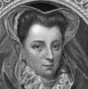Mary Queen of Scots
-
 Mary of Modena
Mary of Modena -
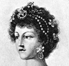The Queen of Etruria
-
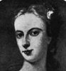Lady Jean Douglas
-
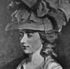Fanny Burney
-
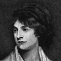Mary Wollstonecraft Godwin
Search OCLC WorldCat for this title.
Search Google Books for this title.